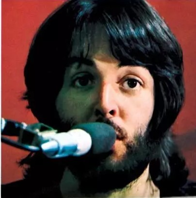
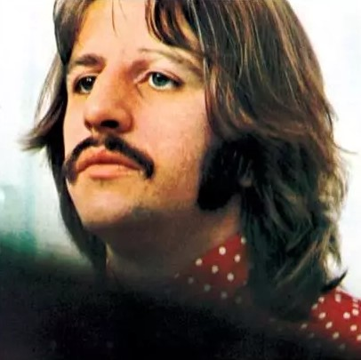
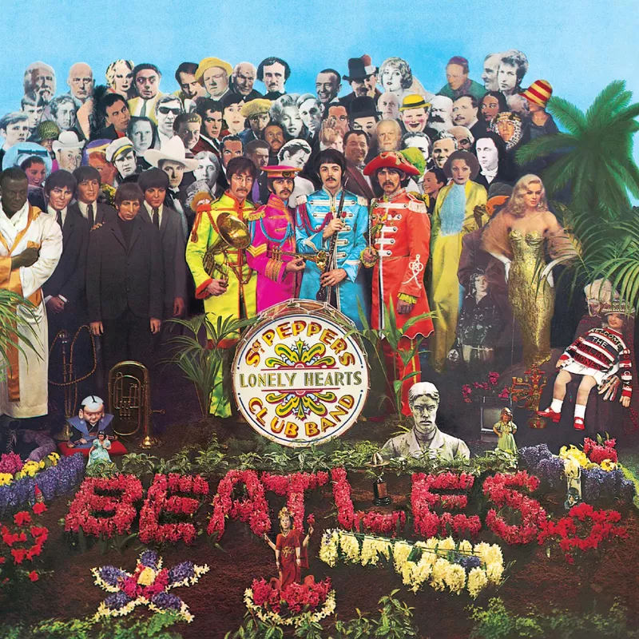

乐队介绍
披头士乐队（The Beatles），是一支在1960年成立于英国利物浦的摇滚乐队，被广泛认为是流行音乐史上最伟大和最有影响力的乐队之一。乐队的主要成员包括：
 约翰·列侬（John Lennon）：乐队的联合创始人之一，担任节奏吉他手和主要创作人之一，以其独特的创作风格和激进的社会观点而闻名。
约翰·列侬（John Lennon）：乐队的联合创始人之一，担任节奏吉他手和主要创作人之一，以其独特的创作风格和激进的社会观点而闻名。
保罗·麦卡特尼（Paul McCartney）：乐队的联合创始人之一，担任贝斯手和主唱，也是乐队的主要创作人之一，以其旋律感和和声技巧著称。
乔治·哈里森（George Harrison）：乐队的吉他手，后来成为乐队的重要创作人，以其对印度音乐和哲学的兴趣而知名。
林戈·斯塔尔（Ringo Starr）：乐队的鼓手，以其简单的鼓点和独特的演奏风格而受到喜爱。
披头士乐队的音乐风格多变，从早期的摇滚和流行音乐，到后来的实验性音乐和迷幻摇滚，他们的作品对后世的音乐家和乐队产生了深远的影响。他们的一些最著名的歌曲包括《Let It Be》、《Hey Jude》、《Yesterday》、《A Hard Day's Night》和《Sgt. Pepper's Lonely Hearts Club Band》等。
披头士乐队在1960年代末因为内部矛盾和个人追求而解散，但他们的音乐遗产至今仍然被世界各地的乐迷所热爱和传唱。他们对流行文化、音乐产业以及艺术表达方式的革新，使他们成为了20世纪最具影响力的文化符号之一。
披头士官网
个人最喜欢的专辑
Sgt.Pepper's Lonely Heart Club Band
《Sgt. Pepper's Lonely Hearts Club Band》是英国摇滚乐队The Beatles的第八张录音室专辑，由乔治·马丁担任制作人，词曲作者包括约翰·列侬、保罗·麦卡特尼和乔治·哈里森。这张专辑于1967年5月26日在英国首发，后于同年6月2日在美国发行。
这张专辑被认为是史上第一张概念专辑，乐队成员们在专辑中扮演一支构想出来的虚拟乐队，即专辑名字所指的“Sgt. Pepper's Lonely Hearts Club Band”。专辑的乐曲之间衔接流畅，主题紧密相关，首尾呼应，塑造出一种完整的音乐体验，在维持专辑一体感的同时又展现不同乐曲风格的多样性。这张专辑对音乐产业和流行文化产生了深远的影响，它激发了其他音乐人的创作灵感，改变了音乐制作的方式，为概念专辑的兴起铺平了道路。
《Sgt. Pepper's Lonely Hearts Club Band》在技术上采用成熟的多轨录音技术，乐队花费了近五个月的时间才完成这张专辑，这在当时是一个浩大的工程。他们“把录音室当成乐器”，逆放、拼贴、变速、叠录、恶搞器材，创造许多天外飞来的声响。这场大胆的声音实验，在压轴曲《A Day in the Life》中发挥得淋漓尽致：那两段管弦乐团世界末日般的轰响，或许是流行乐史最惊人的的声音奇观。
专辑封面由波普艺术家彼得·布莱克与詹·霍沃斯共同设计，应用拼贴手法，让扮演花椒军曹的The Beatles成员们站在一群真人尺寸大小的名人纸板中间，名单皆由The Beatles的成员们提出自己想放的人物。
《Sgt. Pepper's Lonely Hearts Club Band》不仅在音乐上具有革命性，也在艺术和文化上占有重要地位，被滚石杂志评为历史上最伟大的专辑之一。它标志着摇滚乐正式登入世人仰望的艺术殿堂，并且开启了“概念专辑”的时代，解放了摇滚的形式框架。这张专辑至少已经销售了1170万张，并且在1968年获得了第10届格莱美奖“年度专辑”和“最佳当代专辑”两个奖项。
Revolver
《Revolver》是英国摇滚乐队The Beatles的第七张录音室专辑，由乔治·马丁担任音乐制作人。 专辑封面由克劳斯·沃曼设计，罗伯特·惠特克拍摄，共收录14首歌曲，于1966年8月5日通过帕洛风唱片公司发行。 这张专辑标志着乐队在音乐风格和录音技术上的重大转变，他们开始更多地在录音室中进行实验，探索新的音乐可能性。
《Revolver》的音乐风格多样，包括迷幻摇滚、流行、印度音乐元素等，展现了乐队成员在创作上的成熟和多样性。 专辑中的歌曲反映了当时对死亡和超越物质关注等主题的探讨。 乐队在制作这张专辑时，不再考虑在现场演出中复制这些作品，因此他们大胆使用了多种录音室技术，如变速、倒带、近距离音频录制和自动双轨录音（ADT），以及一些超出他们标准现场设置的音乐器材。
这张专辑被认为是流行音乐历史上的一个里程碑，它不仅在音乐上具有创新性，而且在艺术和文化上也占有重要地位。 《Revolver》中的一些录音室实践，特别是ADT技术，很快被整个录音行业采纳。 此外，这张专辑还产生了一首非专辑单曲《Paperback Writer》及其B面《Rain》，乐队为此拍摄了他们的第一个现场宣传影片。
《Revolver》在音乐史上具有重要地位，它不仅展示了The Beatles在音乐上的成熟和多样性，也为后来的流行音乐和摇滚乐的发展奠定了基础。 专辑中的一些歌曲，如《Tomorrow Never Knows》、《Eleanor Rigby》和《Yellow Submarine》等，至今仍被广泛认为是流行音乐的经典之作。
Abbey Road
《Abbey Road》是英国摇滚乐队The Beatles的第十一张录音室专辑，也是他们解散前最后一张集体录制的录音室专辑。这张专辑于1969年9月26日发行，尽管1970年发行的《Let It Be》是他们最后发行的录音室专辑，但其录音时间在《Abbey Road》之前。
《Abbey Road》的录制开始于1969年2月22日，结束于同年8月20日，主要在伦敦的Abbey Road、Olympic和Trident Studios进行。专辑的录制过程中，乐队成员们在个人项目和乐队工作之间分配时间，这导致了录制过程的断断续续。尽管如此，这张专辑被认为是乐队在创作上的巅峰之作，汇集了一系列无与伦比的歌曲。
《Abbey Road》展现了The Beatles的多样性，包括阳光、另类、活泼中带点诡异、极致浪漫和异想天开等不同风格。专辑结尾由8首歌曲结合而成的16分钟串烧，更是玩转了形式的趣味。这张专辑是The Beatles首次仅以立体声格式发行的专辑，利用立体声技术创造了声音从不同方向出现的效果，如在《Here Comes the Sun》中，乔治·哈里森的吉他声从左侧音箱出现，随后是合成器声音，创造了声音在空间中的移动效果。
在《Abbey Road》中，The Beatles巧妙地融合了新兴的录音技术，这使得专辑与他们之前的作品有所不同。他们使用了EMI Abbey Road Studio的新设备，包括TG12345 Mk I晶体管录音控制台，这是他们之前未曾使用过的。乔治·哈里森还使用了当时英国最早的Moog合成器之一，为专辑增添了独特的声音效果。
《Abbey Road》不仅是The Beatles音乐旅程的一个高峰，也是他们合作的一个总结。专辑中的每一首歌都是对乐队成员各自独特天赋的绝好印证，特别是乔治的《Something》和《Here Comes the Sun》，这两首歌可能是有史以来最棒的歌曲之一。《Abbey Road》早就不仅仅是一张音乐专辑，更是一种文化，更是一种精神。